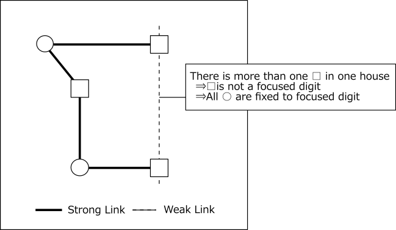

(Multi) Coloring
Coloring is an analysis algorithm that connects the focused dgits with a strong link. Here we show four types of (Multi) coloring.
(1)Coloring Trap
Select numbers and alternately divide the groups of cells connected by this strong link into two groups.
In the following figure, the group of cells connected by strong links of rows/columns/blocks are
classified into two groups of ○ and □. And the operation of dividing into groups is called Coloring.
The number of links is 3 or more and the number of cells is 4 or more.
In this state, either is not decided, but all the cells in one group are focused numbers and the other is not.
At this time, the cell (▴) related to both groups(◯ and □) is not a focused number.
The cell group is Locked with respect to the cell(▲).
In the upper left example, two groups are displayed in green shade.
Coloring Trap #4
group 1 : r4c5 r5c2 r7c6
group 2 : r5c6 r7c2 r8c5
exclude : r48c2#4
4....9.5.23..58.67...4.7.........3253.2....8.5.1...7.....89....9......7..1.72..46
(2)Coloring Wrap
Select number(focused number) and alternately divide the cells connected by this strong link into two groups. This is the same as (1) Trap. At this time, when a plurality of cells of one group belong to the same House, the focused number can be excluded from this group. The other cell group is confirmed as the focused number. 
Coloring Wrap #8
group 1 : r3c5 r8c4
group 2 : r2c4 r38c9 r7c5
exclude : r2c4#8 r38c9#8 r7c5#8
..9..154..5..9.....6.5..92.8..3..1.41..4.6..95.4..8..2.42..9.6.....6..1..187..2..
(3)MultiColoring Type1
Multi Colors Type 1 is an extension of Trap. Select number and alternately divide the groups of cells connected by strong links into two groups. This coloring may be interrupted on the way, in that case it repeats generation as a new cell group. Multiple sequences are generated, and search for places where different groups of cells belong to the same house. Assume that this part is bound by a weak link. In this state, search for a cell▲ which is simultaneously related to two cells(○ and ■) having a color opposite to that of a cell connected with a weak link. This cell has no focused number.
MultiColoring Type1 #7
group 1-A: r1c5#7 r4c6#7
group 1-B: r4c8#7 r5c5#7
group 2-A: r5c3#7 r6c8#7 r8c2#7
group 2-B: r6c2#7 r7c1#7 r8c9#7
exclude : r1c19#7
..9..154..5..9.....6.5..92.8..3..1.41..4.6..95.4..8..2.42..9.6.....6..1..187..2..
(4)MultiColoring Type2
Multi Colors Type 2 is another extension of Trap. Coloring method is the same as Type 1.
If the cell of the same color(●) in one series is connected with the cells of both colors(□ and ○) with the weak link,
The focused number is false in all the cells●. All cells■ are confirmed as the focused number.

MultiColoring Type2 #7
group 1-A: r1c9#7
group 1-B: r6c9#7
group 2-A: r3c6#7 r4c2#7 r5c5#7
group 2-B: r1c5#7 r3c3#7 r4c6#7 r5c7#7
exclude : r1c5#7 r3c3#7 r4c6#7 r5c7#7
...6.8...6...9...529.....483.1...4.64..3.1..2...8.6....1.4.2.7..6.7.9.5.....8....
Coloring program
Coloring will first group the cells.
The main processes of the grouping function is managing processed cells with a bit pattern,
and coloring radially and stepwise using queue. If Coloring is found,
a program of coloring algorithm can be constructed by processing to check the establishment condition.
MultiColoring uses multiple groups, and it can be found by the grouping function as follows.
List<Bit81[]> MCRL = _Coloring(no).ToList();
The following shows the program of grouping function and Colorint Trap.
For other analysis routines, refer to the GNPX project.
public partial class CellLinkGen: AnalyzerBaseV2{
private IEnumerable<Bit81[]> _Coloring( int no ){
Bit81[] CRL=new Bit81[2];
CRL[0]=new Bit81(); CRL[1]=new Bit81();
Bit81 TBD = new Bit81(pBDL,(1<<no));
int rc1=TBD.FindFirstrc();
while( rc1>=0 ){
Queue<int> rcQue=new Queue<int>();
rcQue.Enqueue(rc1<<1);
CRL[0].BPSet(rc1);
TBD.BPReset(rc1);
while(rcQue.Count>0){
rc1 = rcQue.Dequeue();
int kx=1-(rc1&1);
rc1 >>= 1;
TBD.BPReset(rc1);
foreach( var P in CeLKMan.IEGetRcNoType(rc1,no,1) ){
int rc2=P.rc2;
if( !(CRL[0]|CRL[1]).IsHit(rc2) && TBD.IsHit(rc2) ){
CRL[kx].BPSet(rc2); rcQue.Enqueue((rc2<<1)|kx);
}
}
}
yield return CRL;
if( (rc1=TBD.FindFirstrc()) < 0 ) yield break;
CRL=new Bit81[2];
CRL[0]=new Bit81(); CRL[1]=new Bit81();
}
yield break;
}
}
public partial class CellLinkGen: AnalyzerBaseV2{
public bool Color_Trap( ){
CeLKMan.PrepareCellLink(1); //strongLink
for( int no=0; no<9; no++ ){
int noB=(1<<no);
foreach( Bit81[] CRL in _Coloring(no) ){
Bit81 HitB=new Bit81();
Bit81 ELM = (new Bit81(pBDL,noB))-(CRL[0]|CRL[1]);
foreach( var rc in ELM.IEGet_rc() ){
Bit81 HB = HouseCells[18+rc.ToBlock()];
if( ((ConnectedCells[rc]-HB)&CRL[0]).IsZero() ) continue;
if( ((ConnectedCells[rc]-HB)&CRL[1]).IsZero() ) continue;
HitB.BPSet(rc);
}
if( !HitB.IsZero() ){
.
. (Solution report code)
.
return true;
}
}
}
return false;
}
}